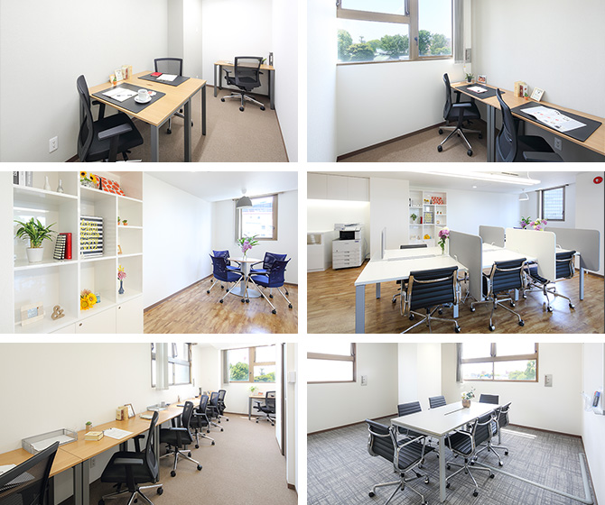

【個室レンタルオフィス】
オープンオフィス大崎駅西口
オープンオフィス大崎駅西口がNEW OPEN
オープンオフィス大崎駅西口は、JR「大崎駅」西口より徒歩3分、山手通りに面したエステージ大崎ビルの6階に位置します。「大崎駅」は山手線、埼京線、りんかい線、湘南新宿ラインが利用でき、都内のビジネスエリアと臨海エリア、横浜エリア、埼玉エリアのビジネスエリアを結ぶ、ハブとなるターミナル駅です。バスターミナルも整備され、羽田空港・成田空港だけでなく、全国各地へのアクセスが可能になっております。
オープンオフィス大崎駅西口が提供するオフィスサービス
-
 高速インターネット＜光ファイバー＞
高速インターネット＜光ファイバー＞
- 100Mbpsの光ファイバーによるブロードバンド環境をご用意しました。各部屋に配線済みですので、パソコンに繋げばすぐLAN経由で高速インターネットを利用出来ます。
-
 ネットワーク・カラーレーザープリンタ+スキャナー
ネットワーク・カラーレーザープリンタ+スキャナー
- ネットワークを利用して、各お部屋のパソコンから印刷できます。プリンタをご用意いただく必要もございません。
スキャナー機能も搭載しております。
-
 カラーレーザーコピー
カラーレーザーコピー
- フロア内にご用意してあります。カード方式でコピーが出来ますので、小銭の準備が不要です。
-
 ICカードキーによる入室管理
ICカードキーによる入室管理
- 専用ICカードを使ったホテル式のスマートシステムを用いて、セキュリティーを向上させています。
-
 ミーティングルーム（会議室）
ミーティングルーム（会議室）
- 商談・会議にご利用いただける共有スペースをご用意しています。インターネットで簡単に予約をしていただけます。
-
 無線LAN（WiFi）
無線LAN（WiFi）
- 共有スペースとミーティングスペースにて、無線LAN(WiFi)サービスをご利用いただけます。

オープンオフィス大崎駅西口の特徴

人気ビジネスエリア「大崎」
首都圏エリアの交通のハブ
支店・営業所としても最適なロケーション
大手企業のオフィスが集まる
ベンチャーの聖地
オフィス周辺のMap
オープンオフィス大崎駅西口近隣のスポット
- ■銀行
- みずほ銀行 大崎支店
東日本銀行 大崎支店
りそな銀行 五反田支店 - ■レストラン
- カンテサンス（フレンチ）
リストランテ アンジェロ（イタリアン）
阿亀寿し（寿司）
鉄板焼き 梨の家（ステーキ） - ■ホテル
- ニューオータニイン東京
ダイワロイネットホテル東京大崎
品川プリンスホテル
ザ・プリンス さくらタワー東京
グランドプリンスホテル新高輪
品川プリンスホテルNタワー
ストロングスホテル東京インターコンチネンタル - ■映画館
- Ｔ・ジョイPRINCE品川
オープンオフィス大崎駅西口の住所・アクセス
- 住所:
- 東京都品川区大崎3-5-2 エステージ大崎ビル6F
- 空港からのアクセス:
- 羽田空港よりリムジンバスで「大崎」まで約35分
羽田空港より京浜急行で「品川駅」経由、JR山手線で「大崎駅」まで約20分
成田空港よりリムジンバスで「大崎駅」まで約75分 - 電車からのアクセス:
- JR山手線・埼京線・湘南新宿ライン、りんかい線「大崎駅」西口より徒歩3分
東急池上線「大崎広小路駅」より徒歩3分
JR山手線、都営地下鉄浅草線「五反田駅」より徒歩9分
- お車でのアクセス:
- 山手通り 大崎ー五反田間 「大崎警察署前」交差点至近
オープンオフィス大崎駅西口のフロアマップ
6F

※フロア内は禁煙です。
※こちらはイメージ図となりますので、状況が異なる場合は現況を優先させていただきます。
- ◆初回納入金
- 利用料1ヶ月分の保証金
- ◆共益費
- 水道光熱費、ビル共益費、ゴミ出し、フロア・トイレの清掃、共有部分の消耗品代を含みます。
リージャスグループの説明
リージャス・グループは、柔軟なワークスペースを提供する世界最大の企業です。そのネットワークは世界120カ国1,100都市、3300拠点に及びます。会員数は250万人で、業界で成功を収める大小様々な企業や起業家の方々にご利用いただいています。
リージャスは、個室タイプのレンタルオフィス、コワーキングスペースなど多彩なオフィスプラン、近年需要が高まるモバイルワークやバーチャルオフィス、障害復旧サービスの提供を通じ、お客様が予算やワークスタイルに合わせて仕事を行うことができる環境を提供いたします。